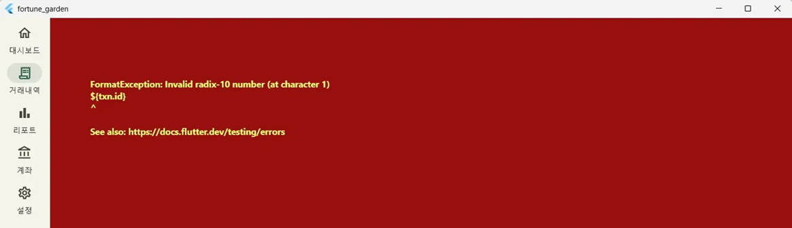
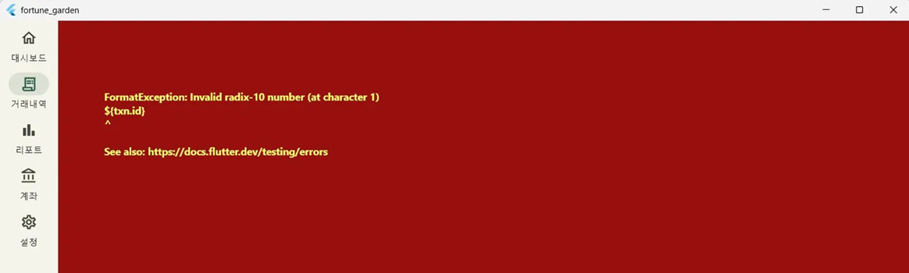
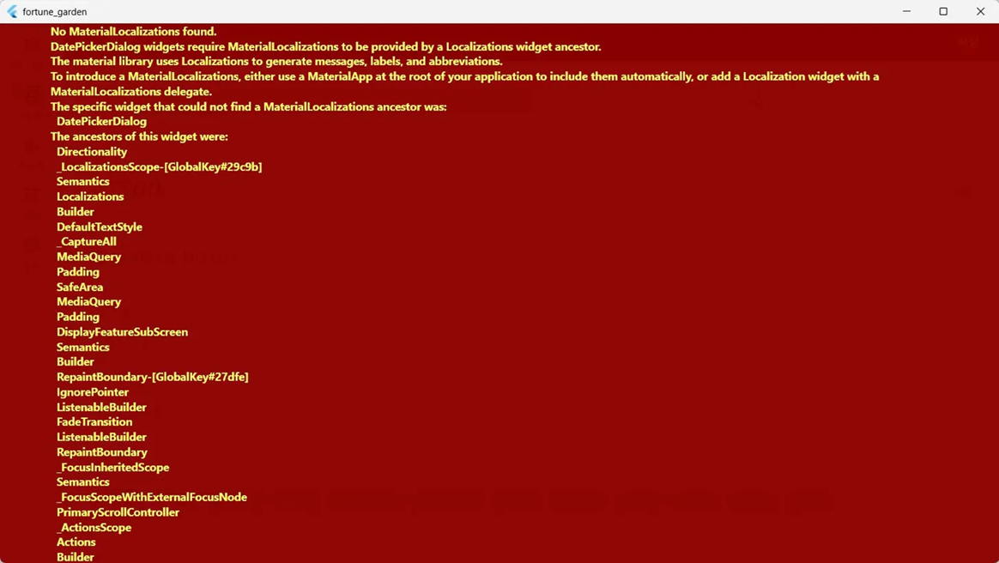

TBS-001 · AppTheme 존재하지 않는 메서드 참조

증상: AppTheme 타입에
expenseColor, incomeColor 등의 메서드나
headerBgDark getter가 정의되지 않았다는 컴파일 에러가
발생했습니다.
원인:
transaction_detail_screen.dart 작성 시 실제
AppTheme에는 존재하지 않는 정적 메서드를 호출한 것이
원인이었습니다. 현재 테마 시스템은 incomeLight,
incomeDark 등의 정적 상수만 제공합니다.
// 해결: build() 내 지역 변수로 분기하여 실제 상수 참조 final isDark = theme.brightness == Brightness.dark; final headerBg = isDark ? const Color(0xFF051a0f) : const Color(0xFF2d4a22); final expenseColor = isDark ? AppTheme.expenseDark : AppTheme.expenseLight; final incomeColor = isDark ? AppTheme.incomeDark : AppTheme.incomeLight; final primaryColor = theme.colorScheme.primary;
TBS-002 · FormatException: Invalid radix-10 number

증상: 거래 내역 화면에서 특정 행동 시 앱 전체가
빨간 에러 화면으로 전환되며 int.parse 오류가
발생했습니다.
원인 1: go_router 라우트 선언 순서
동적 경로(:id)를 정적 경로(new)보다 먼저
선언하여, /transactions/new 요청이
:id = "new"로 매칭되는 버그가 발생했습니다.
원인 2: 문자열 보간 이스케이프 버그
\${txn.id}와 같이 백슬래시가 포함되어 Dart의 문자열
보간이 작동하지 않고 리터럴 문자열이 그대로 전달되었습니다.
// 해결: 라우트 순서 변경 및 백슬래시 제거 routes: [ GoRoute(path: 'new', ...), // 정적 경로 우선 GoRoute(path: ':id', ...), ] context.push('/transactions/${txn.id}'); // 정상 보간
TBS-003 · No MaterialLocalizations found

증상: 날짜 선택(DatePickerDialog) 시
MaterialLocalizations를 찾을 수 없다는 에러와 함께 앱이
중단되었습니다.
원인: showDatePicker에 한국어 로케일을
지정했으나, MaterialApp 상위에 필요한 localization
델리게이트들이 등록되지 않았기 때문입니다.
해결: app.dart 내의 모든
MaterialApp(로딩, PIN, 메인)에 공통 설정을 추가하고
pubspec.yaml에 의존성을 확보했습니다.
localizationsDelegates: [ GlobalMaterialLocalizations.delegate, GlobalWidgetsLocalizations.delegate, GlobalCupertinoLocalizations.delegate, ], supportedLocales: [Locale('ko', 'KR'), Locale('en', 'US')],
세션 작업 내역 요약
| ID | 에러명 | 원인 | 해결 |
|---|---|---|---|
| TBS-001 | AppTheme 메서드 없음 | 존재하지 않는 정적 메서드/getter 호출 | 실제 존재하는 상수로 교체 및 지역 변수 활용 |
| TBS-002 | FormatException | 라우트 선언 순서 오류 및 문자열 보간 버그 | 라우트 순서 변경 및 백슬래시 제거 |
| TBS-003 | No MaterialLocalizations | MaterialApp에 localization 미등록 | GlobalMaterialLocalizations 델리게이트 등록 |